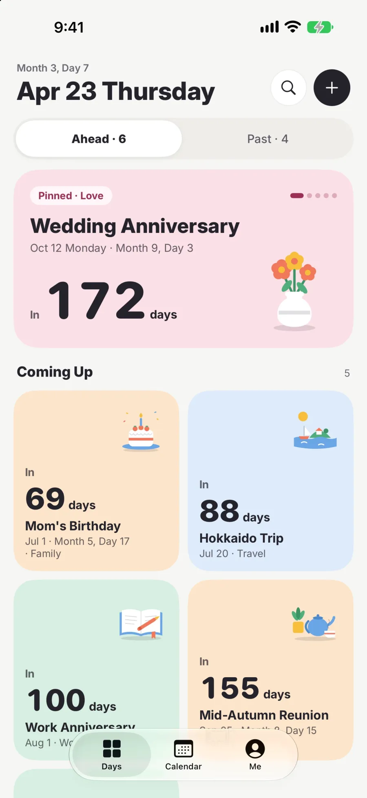
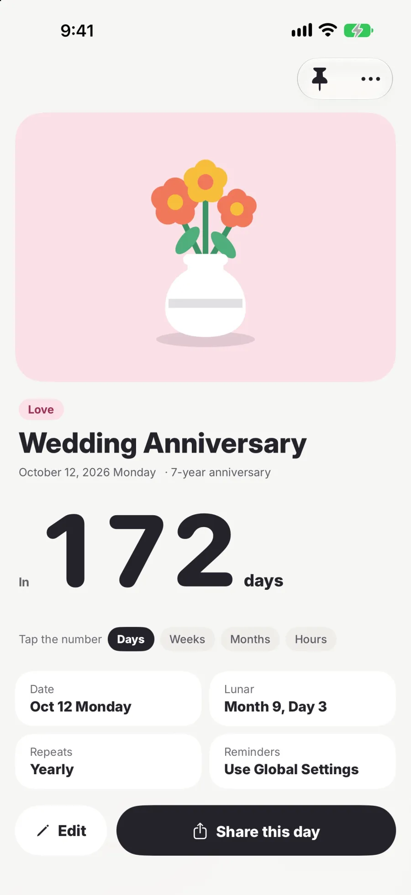
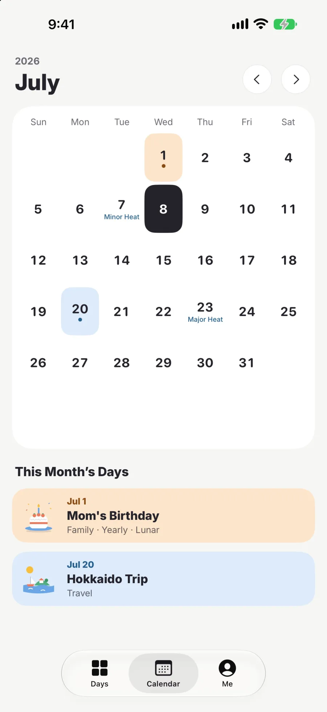
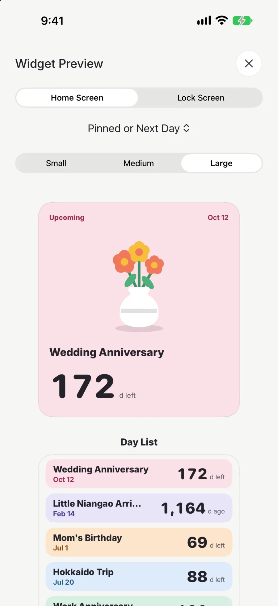
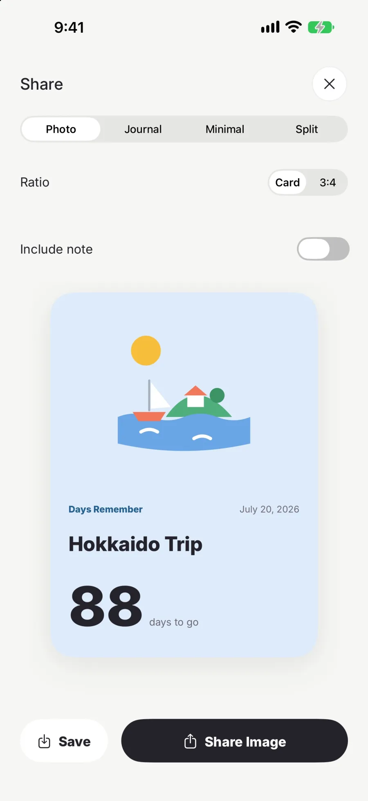
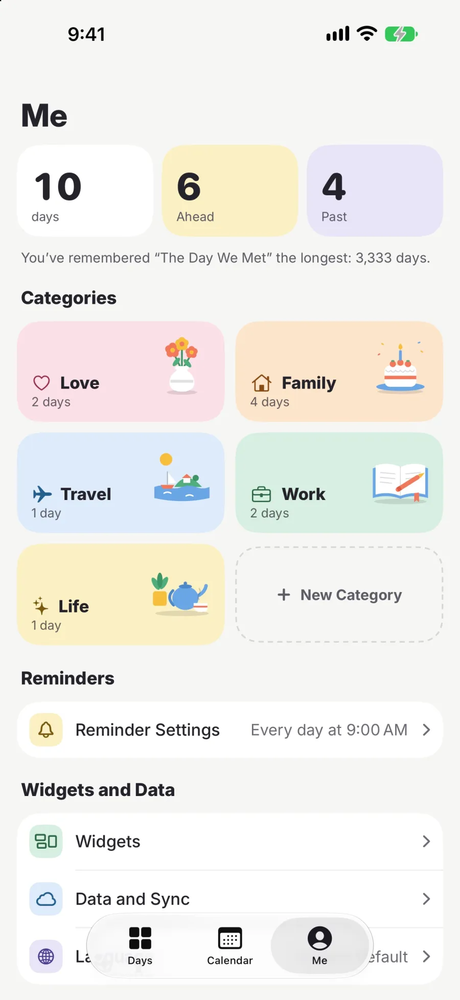
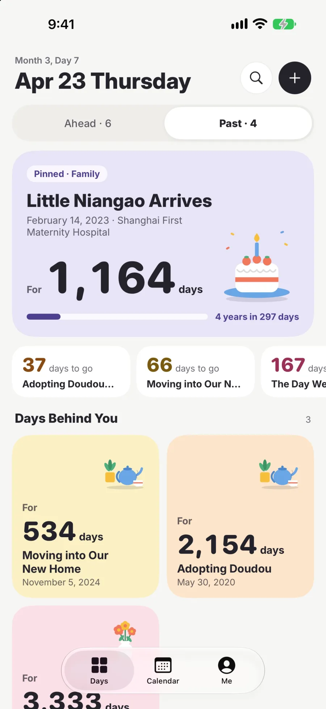

Days RememberGently remember every day that matters
Whether it’s a wedding anniversary, a baby’s first day, an upcoming trip, or an exam countdown—look forward to what’s ahead, and look back on what has passed.

Try it
How many days until that day?
Enter a date that matters to you and see how Days Remember keeps count.
—
Features
Keep the days you care about within reach, with gentle reminders along the way
-
Ahead and Past
The Days tab has two sides. Ahead counts down to upcoming dates with pinned and nearest days first—and keeps yearly anniversaries around for a week after they pass so you have time to write down a memory. One-time days move to Past after they arrive, counting up day by day.
2views
-
Round numbers
Days in Past automatically highlight their next milestone: every 100 days up to 1,000, every 500 days after that, and every full year—making ordinary days worth celebrating.
100days, 500 days or a year
-
Lunar calendar and solar terms
Repeat birthdays and anniversaries by either the Gregorian or lunar calendar. The built-in calendar marks lunar dates, the 24 solar terms, and traditional festivals from 1900 through 2100.
24solar terms
-
Tap to change units
In any day’s detail view, tap the number to switch effortlessly between days, weeks, months, and hours. Below, a clear timeline shows the last and next anniversaries or the next round-number milestone.
4units
-
Reminders
Get notified 7, 3, or 1 day ahead, or on the day itself, at the time you choose. You can also turn on a morning Daily Greeting or yearly Memories for past days.
7 · 3 · 1days before
-
Cover illustrations
Every day is a card in its category’s soft color palette. Frame it with a favorite photo of your own, or choose from 12 hand-crafted flat illustrations automatically matched to each category.
12illustrations
-
Widgets
Bring your days to the Home Screen in small, medium, or large cards, view multiple upcoming dates with the day list widget, or add one of three Lock Screen widgets. Pin a specific day or let it follow your top pinned item—and add new days from Control Center or ask Siri anytime.
8styles
-
Share cards
Turn any day into a clean 3:4 portrait card with Photo, Journal, Minimal, or Split templates. Personal notes stay private by default unless you choose to include them.
4templates
-
Custom categories
Start with Love, Family, Travel, Work, and Life, or create your own categories in Me—each with a custom icon and one of five gentle color themes.
5colors
-
iCloud sync
Sync your days, categories, and photos privately through your own iCloud account, or keep everything on this device only. Deleted days stay in Recently Deleted on each device for 30 days so you can restore them anytime.
30days to restore
Screenshots
On iPhone






0
Your memories belong only to you
Your days, photos, and settings live on your device—and in your private iCloud storage if you turn on sync. Nothing ever passes through our servers or reaches the developer.
- No account
- No ads
- No tracking
- No third-party SDKs
Support
Need help?
Setting up a widget, troubleshooting notifications, or moving to a new iPhone? Find answers and ways to reach out on the support page.